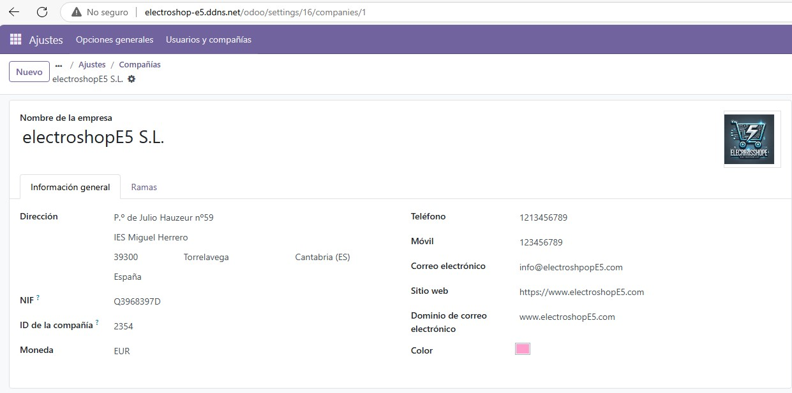
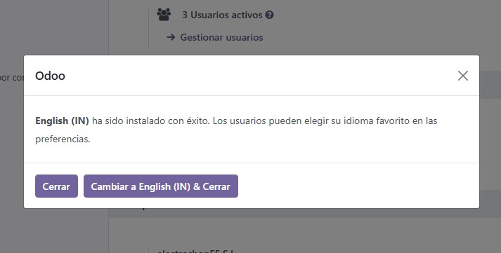
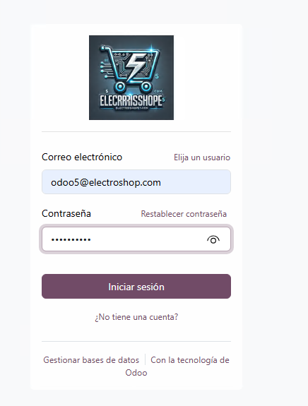

Configuración en Odoo5: Información General de la Empresa, Instalación de Idiomas y Módulos
Introducción
Después de instalar Odoo en nuestra máquina virtual y configurar correctamente los servicios necesarios, procedemos a realizar los primeros pasos de configuración. Odoo es un ERP (Enterprise Resource Planning) que permite gestionar de manera integrada diferentes áreas de la empresa. Su funcionamiento se basa en la instalación de módulos que cubren aspectos esenciales como ventas, compras, inventario, recursos humanos y contabilidad.
Tras completar estos pasos, accedemos a nuestro dominio'electroshop-e5.ddns.net' configurado con No-IP, el cual dirige la petición al proxy inverso que a su vez redirige la solicitud a la máquina donde instalamos Odoo. Esto nos lleva a la página de acceso del sistema, donde iniciamos sesión con las siguientes credenciales:
- Correo electrónico:
odoo5@electroshop.com - Contraseña:
usuario@E4
1. Configuración de datos de la Empresa
Paso 1: Modificar la información general de la empresa
- Navegamos a Ajustes > Compañias > y entramos en la Configuración de la empresa.
- Seleccionamos la empresa predeterminada y editamos los siguientes campos:
Datos de la Empresa
| Campo | Valor |
|---|---|
| Nombre | ElectroshopE5 S.L. |
| Dirección | Pº de Julio Hauzeur nº59 |
| Dirección 2 | IES Miguel Herrero |
| Código Postal | 39300 |
| Ciudad | Torrelavega |
| Provincia | Cantabria (ES) |
| País | España |
| NIF | Q3968397D |
| Moneda | EUR |
| Teléfono | 123456789 |
| Móvil | 123456789 |
| Correo Electrónico | info@electroshopE5.com |
| Sitio Web | https://www.electroshopE5.com |
| Dominio | www.electroshopE5.com |

Paso 2: Subir el logo de la empresa
- Dentro de la misma pantalla, buscamos la opción Logo de la Empresa.
- Subimos el archivo de imagen correspondiente.
- Guardamos los cambios.
2. Instalación de Idiomas
- Vamos a Ajustes > Idiomas > Añadir idiomas.
- Hacemos clic en Añadir y agregamos los siguientes idiomas:
-
Español (Spanish)

-
Inglés (English)
 - Francés (Français)

-
Árabe (Arabic)
-
Guardamos los cambios y confirmamos la instalación.
3. Instalación de Módulos Esenciales
Paso 1: Acceder a la gestión de módulos
-
Nos dirigimos al Panel de Aplicaciones :

Paso 2: Instalar los módulos clave
Buscamos e instalamos los siguientes módulos: - Ventas - Compras - Recursos Humanos - Inventario - Empleados - Contabilidad
Paso 3: Verificar la instalación , y ver los módulos instalados y no instalados
- Aplicamos el filtro para ver qué módulos ya están instalados :escribimos Instalado.
- Confirmamos que los módulos necesarios aparecen con los módulos instalados :
- Aplicamos otro filtro para ver los módulos que aún no están instalados:escribimos en el filtro :No instalado.

- Si algún módulo no se instaló lo instalamos .
4. Comprobación Final
- Nos desconectamos y volvemos a iniciar sesión en Odoo.
- Abrimos un navegador web y accedemos a Odoo en la siguiente URL:
http://electroshop-e5.ddns.net - Introducimos las credenciales y hacemos clic en Iniciar sesión:

- Verificamos que la información de la empresa se haya guardado correctamente :

- Comprobamos los idiomas :

- Confirmamos que los módulos instalados aparecen en el panel de administración.